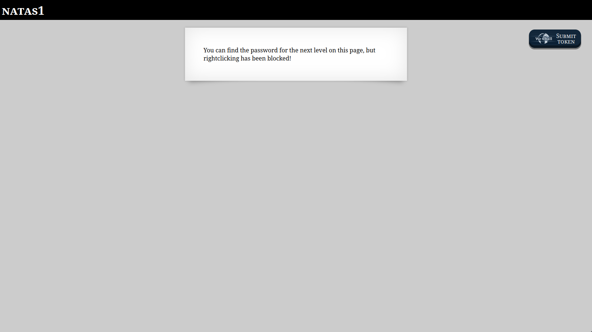
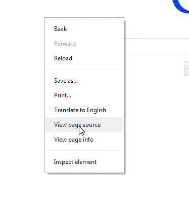
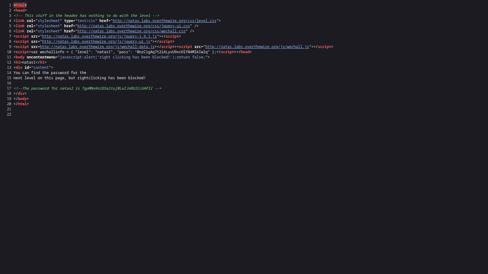

This challenge is practically the same as the previous one, but this time right-clicking has been disabled.

This prevents users from right-clicking the page and selecting “View Page Source”.
Luckily, I’ve already shown you how to view a page’s source without right-clicking.
After doing so, we can once again see that the password is in the page’s source code on line 17.TguMNxKo1DSa1tujBLuZJnDUlCcUAPlI
Back